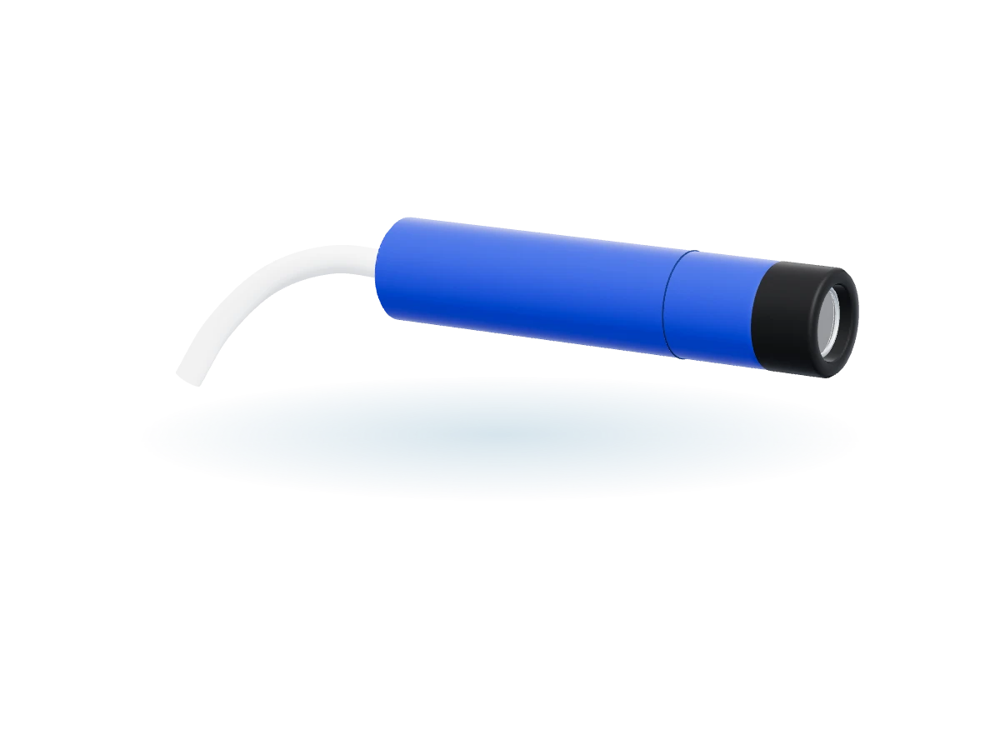

Lasermodule · Made in Germany
Licht, das präzise misst.
Wir entwickeln und fertigen Linienlaser, Punktlaser und Powell-Linsen für Bildverarbeitung, Industrie, Medizintechnik und Forschung – seit 1987 in Überlingen am Bodensee.
Produkte entdecken
MVnano Der Standard für Machine Vision
Produkte
Für jede Aufgabe die passende Linie.

MVnano
Der bewährte Linienlaser für 3D-Messung und Prüfung.
405–850 nm · bis 100 mW
MVpulse
Viel Licht, trotzdem augensicher.
bis 100 mW · Klasse 2
MVgoldHP
Bis 2 W – mit aktiver Kühlung.
445–808 nm · TEC
MVsquare
Einschrauben, fertig – ab Werk justiert.
65 × 15 × 15 mm
Punktlaser
Rundes Strahlprofil für Ausrichtung und Messtechnik.
405–850 nm · bis 100 mW
Powell-Linsen
Gleichmäßig helle Linien – aus eigener Fertigung.
Ø 6 / 9 mm · 1°–90°Was wir machen
Von der Optik bis zum fertigen Modul – alles aus einer Hand.
-
Optik
Eigene Powell-Linsen formen den Strahl zur gleichmäßigen Linie.
-
Elektronik
Treiber, Modulation und Pulsbetrieb – abgestimmt auf Ihre Kamera.
-
Lasermodul
Montiert, justiert und geprüft in Überlingen – als Standard oder nach Maß.
- 1987gegründet
- 13Produktfamilien
- 405–905 nmWellenlängen
- ab 10Stück Kleinserie
Warum BLAU
Präzision, auf die Sie bauen können.
Made in Germany
Entwicklung und Fertigung am eigenen Standort.
ISO 9001:2015
Geprüfte Qualität in jedem Schritt.
Nach Ihren Vorgaben
Wellenlänge, Leistung, Optik und Gehäuse anpassbar.
Gleichmäßige Linien
Powell-Optik statt Zylinderlinse – homogene Helligkeit.
Erzählen Sie uns von Ihrer Anwendung.
Wir sagen Ihnen, welches Modul passt – oder was wir für Sie anpassen.